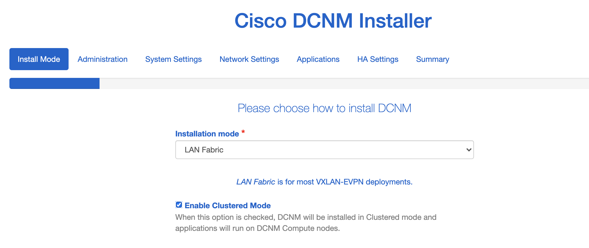

DCNM 安装
DCNM 网络拓扑
在DCNM部署中，需要用到三个网络，分别是：
- dcnm-mgmt network(eth0)：管理网，用于访问DCNM Web GUI, 进行DCNM配置管理
- enhanced-fabric-mgmt(eth1)： OOB带外网络，交换机带外管理网络，DCNM服务器通过这个网络下发配置到交换机
- enhanced-fabric-inb(eth2)：INB带内网络，通过交换机前面板端口提供EPL, Telemetry等高级功能
Note:
eth0和eth1可以使用同一个网段的两个不同地址以减少对于网络的需求。eth2通常使用内部地址满足DCNM服务器和交换机的通讯需求。
为了后续步骤的顺利安装，建议在安装前根据上面拓扑图中的DCNM地址信息内容规划好对应的网段地址信息。
DCNM OVA 部署
1. DCNM管理节点安装
DCNM OVA的部署十分简单直观，直接安装向导完成即可，需要注意的参数选择如下：
选择Small(Lab/PoC)部署模式
注意NIC的选取，对应上面👆提到的三个网络
注意要将Eth1和Eth2对应的port-group的 Promiscuous 模式设置为Accept
部署两个VM做HA,部署完成后power on。
Primary节点Power on后，根据console的URL进入设置画面
选择Fresh installation - HA Primary
选择LAN Fabric模式并点选Enable Clustered Mode

输入Password
输入DNS/NTP/Timezone信息
输入地址信息 Management/OOB/INB
输入OOB, INB Pool信息
开始安装！
Primary节点安装完成后，提示进行Secondary节点安装
如同Primary节点，进入Secondary节点的安装界面，选择Fresh installation - HA Secondary
按照提示完成所有剩余步骤，注意有些参数需要和Primary节点保持一致
<略>
输入HA VIP信息, 完成安装
安装完成后，检查HA状态
也可以通过SSH登录DCNM管理节点检查，用户名为 sysadmin，密码为登录密码
2. DCNM Compute Node安装
OVA的安装与管理节点的安装类似，区别在于部署模式选择 Compute 模式
完成三个Compute node的OVA部署，完成后power on。根据console的URL，进入下一步的安装
选择 Fresh installation - Standalone
mode选择 Compute
输入与管理节点一致的密码
完成DNS, NTP, VIP等信息
根据规划的地址，完成网络信息的输入, 完成安装。
安装完成后，进入DCNM Web GUI将compute node加入集群
最终三台compute node都成功加入集群